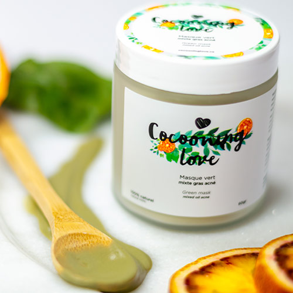
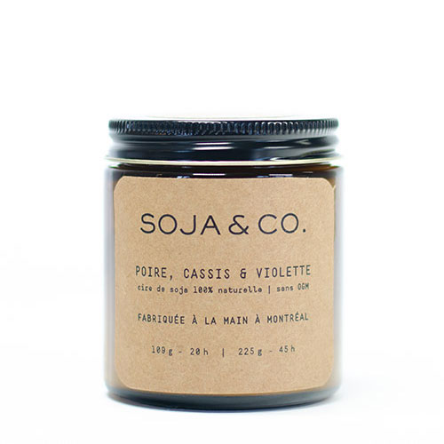

Nos produits
Cocooning Love
Prenez soin de vous, offrez-vous Cocooning Love. C’est créé/fabriqué à Montréal, c’est 100% naturel, c’est non-testé sur les animaux, c’est doux, ça s’appelle Cocooning Love.
Dot&Lil

Dot&Lil fabrique des produits d’inspiration vintage pour bain, corps et maison. les produits sont faits à la main dans notre atelier de Rosemont, à Montréal. Des fragrances classiques et des produits inspirés par la simplicité
Living Proof

Living Proof relève les plus grands défis du monde de la beauté grâce à des notions scientifiques et à des technologies brevetées élaborées au MIT et change le monde des soins capillaires.
Soja&Co
SOJA&CO propose des fragrances uniques et originales tout en mettant le respect de l’environnement et des ingrédients de qualité supérieure de l’avant. Nos bougies artisanales sont fabriquées à la main, à Montréal, avec de la cire de soja 100% naturelle qui est une alternative écologique à la cire de paraffine dérivée du pétrole - le choix traditionnel de la cire pour les bougies parfumées.
Lust&Co accessories

Venez découvrir nos collections de bijoux et accessoires exclusif au salon choisis minutieusement juste pour vous par l'une de nos collaboratrice qui voyage à travers le monde.
Xtreme Lashes
Xtreme Lashes Canada a été créé dans le but ultime d’enrichir la vie des gens grâce à ses produits pour les cils révolutionnaires, un service à la clientèle de renommé mondiale et des programmes de formation axés sur la pratique.